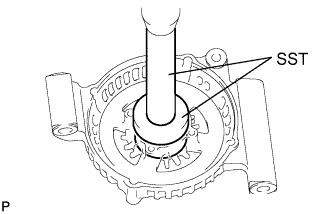
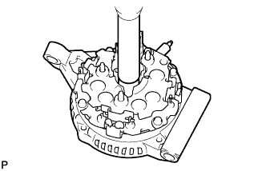
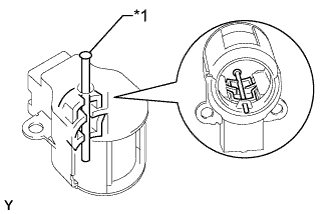
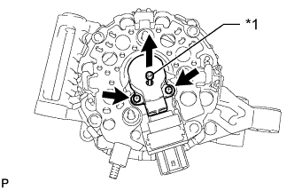
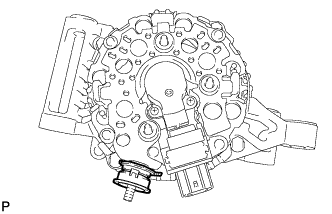
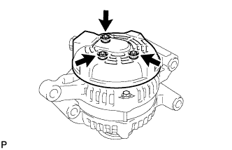
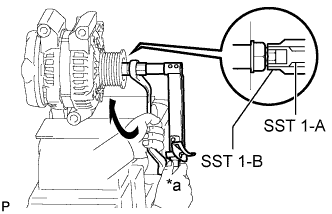
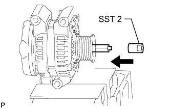
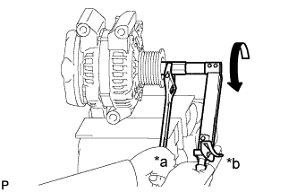
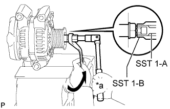

GENERATOR > REASSEMBLY |
| 1. INSTALL GENERATOR DRIVE END FRAME BEARING |
|  |
Using SST and a press, press in a new bearing.
Install the retainer plate with the 4 screws.
| 2. INSTALL GENERATOR ROTOR ASSEMBLY |
Install the generator rotor to the drive end frame.
Place the generator washer on the rotor.
| 3. INSTALL GENERATOR COIL ASSEMBLY |
|  |
Using a 22 mm socket wrench and press, slowly press in the coil assembly.
Install the 4 bolts.
| 4. INSTALL GENERATOR BRUSH HOLDER ASSEMBLY |
|  |
While pushing the 2 brushes into the generator brush holder, insert a pin with a diameter of 1.0 mm (0.0394 in.) into the brush holder hole.
| *1 | Pin |
|  |
Install the generator brush holder with the 2 screws.
Pull out the pin from the generator brush holder.
| *1 | Pin |
| 5. INSTALL TERMINAL INSULATOR |
|  |
Install the terminal insulator to the generator coil.
| 6. INSTALL GENERATOR REAR END COVER |
|  |
Install the generator rear end cover with the 3 nuts.
| 7. INSTALL GENERATOR PULLEY |
Temporarily install the generator pulley by hand.
Mount the generator in a vise between aluminum plates.
|  |
Install SST 1-A to the pulley shaft.
| SST 1-A and B | 09820-06010 |
| SST 2 | 09820-06021 |
Install SST 1-B to SST 1-A.
Hold SST 1-A with a torque wrench and turn SST 1-B clockwise with the specified torque.
| *a | Hold |
 | Turn |
|  |
Insert SST 2 and attach it to the pulley nut.
| Insert |
|  |
Tighten the pulley nut by turning SST 1-A in the direction shown in the illustration.
| *a | Hold |
| *b | Turn |
Remove the generator from SST 2.
|  |
Turn SST 1-B, and then remove SST 1-A and B.
| *a | Hold |
| Turn |
Turn the pulley and check that the pulley moves smoothly.